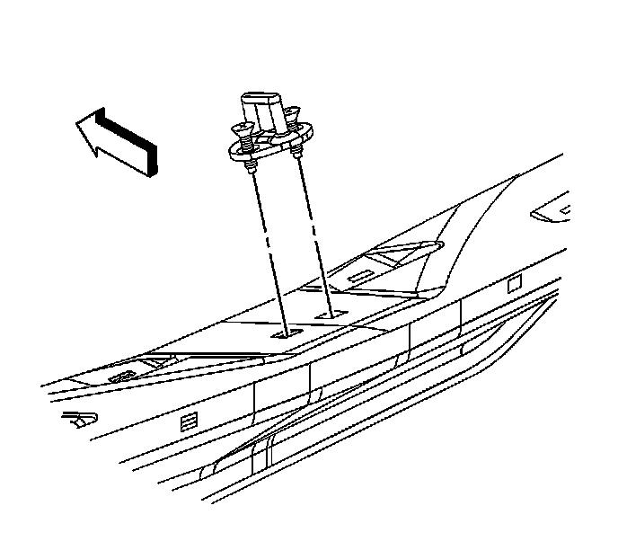

Trunk / Liftgate Striker: Service and Repair
Liftgate Latch Striker Replacement
Removal Procedure
1. Remove the rear compartment sill plate. Refer to Rear Compartment Sill Trim Plate Replacement (Service and Repair) .

2. Use a grease pencil to mark the liftgate latch striker position.
3. Remove the bolts securing the liftgate latch striker to the vehicle.
4. Remove the liftgate latch striker and the gasket from the vehicle.
Installation Procedure
1. Position the liftgate latch striker and the gasket to the vehicle.
2. Install the bolts that secure the liftgate latch striker to the vehicle.
Notice: Refer to Fastener Notice (Fastener Notice) .
3. Adjust the liftgate latch striker as necessary.
Tighten the latch striker bolts to 25 N.m (20 lb ft).
4. Install the rear compartment sill plate. Refer to Rear Compartment Sill Trim Plate Replacement (Service and Repair) .